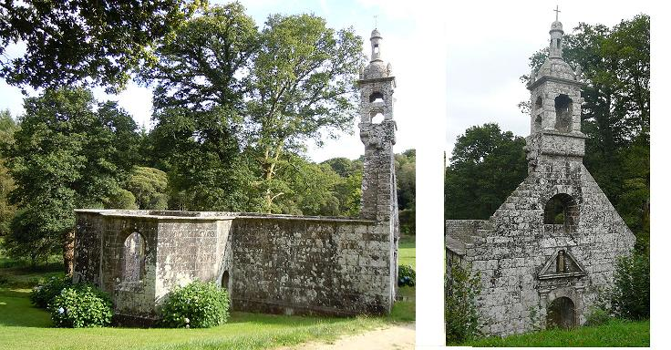

|
Pas de mélodie connue. Remplacée ici par "Son ar Chistr" (la chanson du cidre). |
No tune known. Replaced here by "Son ar Chistr" (Song of cider). |

|
BREZHONEK BANALEK p. 122 1. Tri den yaouank a Banalek Lon la Tri den yaouank a Banalek Zo aet d'ar pardon d'an Dreinded. [1] Farlaïk lan rour Tra la la la la [2] Zo aet d'ar pardon d'an Dreinded. 2. Vit evañ gwin d'o mestrezed. Ar gwin a oa dousik avat! 3. An ostizez reas tro an ti Serviedenn lien deus he brec'h ganti. 4. Ne oa ket awalc'h d'ar baotred. Nemed ar gwin a zo evet! 5. - Nemed ar gwin a zo evet. Mez ar gont red c'hwi da gaved! 6. Ar gont, ar gont c'hwi a gavo Peotramañt ni ho ziwisko! - 7. Fanchon Ar Gov, ar verc'hik vat, A daolas betek seizh rolled. [3] 8. - Na n'eo ket awalc'h ta, paotred! Moned d'ar ger en ho roched! 9. Moned d'ar ger en ho roched, 'Samblez gant ho tanvez-merc'hed! [4] 10. - Maz' ean ' wechik c'hoazh d'am bro M'am bo soñj e Fanchon Ar Gov! 11. M'am bo soñj e Fanchon Ar Gov! Zo deuet war sikour va bragoù. [5] 12. Maz' ean wechik c'hoazh d'am bro, Bazhik daou benn a c'hoario! - [6] |
TRADUCTION FRANCAISE BANNALEC p. 122 1. Trois jeunes gens de Bannalec Lon la Trois jeunes gens de Bannalec Au pardon de La Trinité. [1] Farlaïk lan rour Tra la la la la [2] Au pardon de La Trinité. 2. Avec leurs belles sont allés Le vin était bon et sucré! 3. C'est la patronne que voilà, Une serviette sur le bras. 4. Les gars en veulent toujours plus. Et qu'importe ce qu'ils ont bu! 5. - Cela m'importe, je vous dis! Bons comptes font les bons amis! 6. Faites que le compte soit bon Sinon nous vous dévêtirons! - 7. Fanchon le Goff fait un cadeau: Elle va jusqu'à sept rouleaux [3] 8. - Le compte n'y est pas, les gars! Vos braies, et plus vite que ça! 9. En chemise, rentrez chez vous, Avec vos amies, jeunes fous! [4] 10. - Si j'arrive à rentrer chez moi Fanchon, je ne t'oublierai pas! 11. Je me souviendrai de Fanchon Qui m'a volé mon pantalon. [5] 12. Si j'arrive à rentrer chez moi, Mon bâton ferré, c'est pour toi! -[6] Traduction: Christian Souchon (c) 2014 |
ENGLISH TRANSLATION BANNALEC p. 122 1. Three young fellows from Bannalec Lon la Three young fellows from Bannalec Went to the fair of Trinité. [1] Farlaïk lan rour Tra la la la la [2] Went to the fair of Trinité. 2. With their girl-friends at a table, The wine was right palatable! 3. The landlady came from the farm Wearing a napkin on her arm. 4. The fellows had not drunk enough Despite the already drunk stuff! 5. - For the wine that is drunk first pay! That must be settled anyway 6. With the cash of which you dispose! Or else we shall take off your clothes! - 7. Fanny Le Goff knocked, how nice!, Thirty five shillings off the price. [3] 8. - The count is not yet right. - said she You must leave your trousers to me. 9. You go home in your underpants, Your fiancées will lead the dance! [4] 10. - Let us go! It's time I was off I'll remember Fanny Le Goff! 11. Fanny Le Goff was so perverse As to use my pants as a purse! [5] 12. But mind, I shall remember to Introduce my cudgel to you! - [6] Translation: Christian Souchon (c) 2014 |
|
Bibliographie: Manuscrits: - Coll. Penguern, t.89: Pevar pod yiaouanc er Ieodet (Taulé, 1850) (=Gwerin 4) [1] La Trinité: Compte tenu de la distance par rapport à Bannalec, il ne s'agit sans doute pas de la Trinité-sur-Mer, à côté de Brest, mais du pardon de la Trinité qui avait lieu en juin à Lanévégen, à 15 km au NE de Bannalec. [2] Lon la, etc.: Dans le manuscrit de La Villemarqué, ce refrain est donné avec la strophe 5. Il permet sans doute d'identifier la mélodie. C'est celle d'un autre air connu: "Son ar chistr", la chanson du cidre. Elle fut composée, sur le modèle du présent chant, par deux paysans de Guiscriff (Morbihan), Jean-Bernard et Jean-Marie Prima, en 1929, sous le titre vannetais "Yao jistr 'ta, Laou!". Elle est devenue un "tube" de la variété bretonne quand Polig Monjarret s'en est emparé en 1951. J'ai dans ma discothèque un chant en néerlandais de Hans Sanders "Wat zullen we drinken zeven dagen lang" (Qu'allons-nous boire sept jours durant?) où les "lonla" et "farlaïk..." sont remplacés par des paroles intelligibles, mais où l'on ne précise pas de quelle boisson on parle. Le livret du CD, orné de personnages habillés en Highlanders(!), cite approximativement le nom de la mélodie: "Son ar ghistr". Il semble bien que, comme souvent, ce soit La Villemarqué qui ait été le premier à découvrir l'archétype de ce chant où s'entremêlent texte et onomatopées. [3] Rollet: "rouleau de cinq sols, soit soixante liards ou deniers", selon le dictionnaire du Père Grégoire. M. Donatien Laurent lit "a tolles an dol petek seis rollet" et traduit "elle jeta sur la table 5 (?) rouleaux". Le contexte fait plutôt penser au mot "distaol", le "rabais", qui justifie le qualificatif de "maouezik mad" (brave femme) qui est consenti à la patronne au vers précédent. [4] Danvez-merc'h: (ou "danvez-pried"), signifie "future fiancée". "Danvez", qui veut dire "sujet", "matière", prend le sens de "aspirant", "candidat" dans ce genre de composés. [5] Sikour timen: Donatien Laurent traduit ces mots énigmatiques par "qui m'a soulagé de" (mon pantalon). Les dictionnaires connaissent l'expression "mond war sikour ubg.", aller au secours de quelqu'un. [6] Bazh daou-benn: bâton ferré (!) aux deux bouts. |
Bibliography: Manuscripts: - Coll. Penguern, t.89: Pevar pod yiaouanc er Ieodet (Taulé, 1850) (=Gwerin 4) [1] La Trinité: Considering the distance from Bannalec, it is certainly not La Trinité-sur-Mer, the small town adjoining Brest. The song could be about the Trinity pardon held in June at Lanvénégen, 15 km north-east of Bannalec. [2] Lon la, etc. : In La Villemarqué's MS, this burden appears in stanza 5. It should allow identifying the melody. It is the vehicle for another well-known ditty: "Son ar chistr", the song of cider. It was composed, in accordance with the pattern of the song at hand, by two Guiscriff (Morbihan) farmers, Jean-Bernard and Jean-Marie Prima, in 1929, under the Vannes dialect title "Yao jistr 'ta, Laou!". It has become a "hit" in Breton entertainment music, when Polig Monjarret grasped it in 1951. In my CD collection there is a Dutch song by Hans Sanders "Wat zullen we drinken zeven dagen lang?" (What shall we drink all through the week?), where the "lonla" and "farlaïk..." burden elements yielded to intelligible words, whereas no specific drink is meant. The CD booklet, adorned with sturdy characters clad in Highland garb (!), mentions the name of the melody in a rather approximate way: "Son ar ghistr". As it oft happens, it appears that it was La Villemarqué who first recorded the archetypal instance of this song where lyrics and onomatopoeia deftly intertwine. [3] Rollet: "roll of five shillings, i.e. sixty pence or farthings", as stated in the Rev. Gregory's dictionary. M. Donatien Laurent reads "a tolles an dol petek seis rollet", which he translates as "She tossed on the table 5 (?) rolls". But the context hints at the word "distaol", discount, which justifies the term "maouezik mad" (a good little woman) in the foregoing stanza. [4] Danvez-merc'h: (or "danvez-pried"), means "future fiancée". "Danvez", usually means "matter", "stuff", but means "oncoming", "candidate" in that kind of compounds. [5] Sikour timen: Donatien Laurent translates these enigmatic words as "who has relieved me " (of my trousers). Dictionaries give the phrase "mond war sikour ubg.", To go to somebody's aid. [6] Bazh daou-benn: literally a stick with iron tips at both ends (!). |